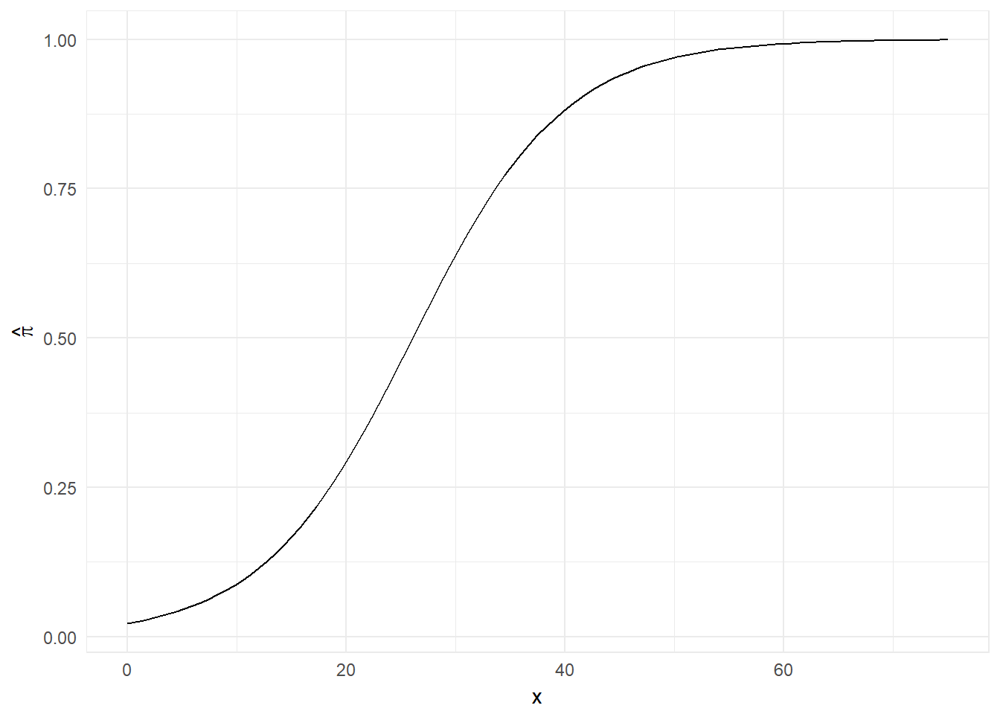
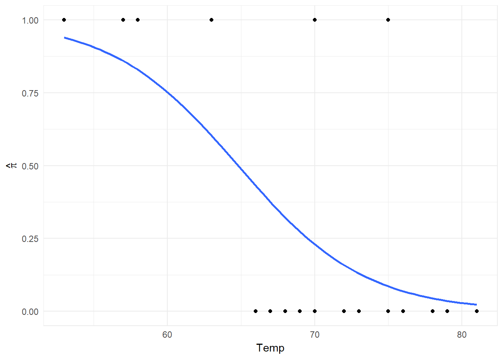
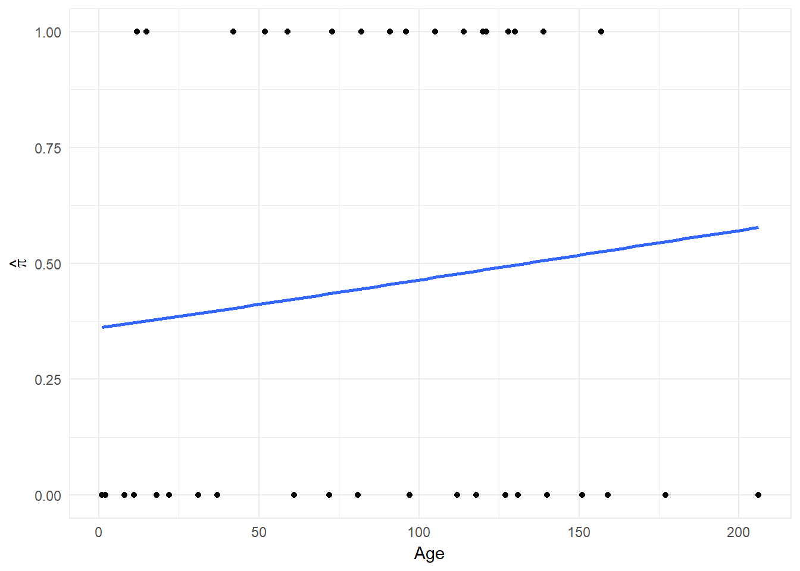
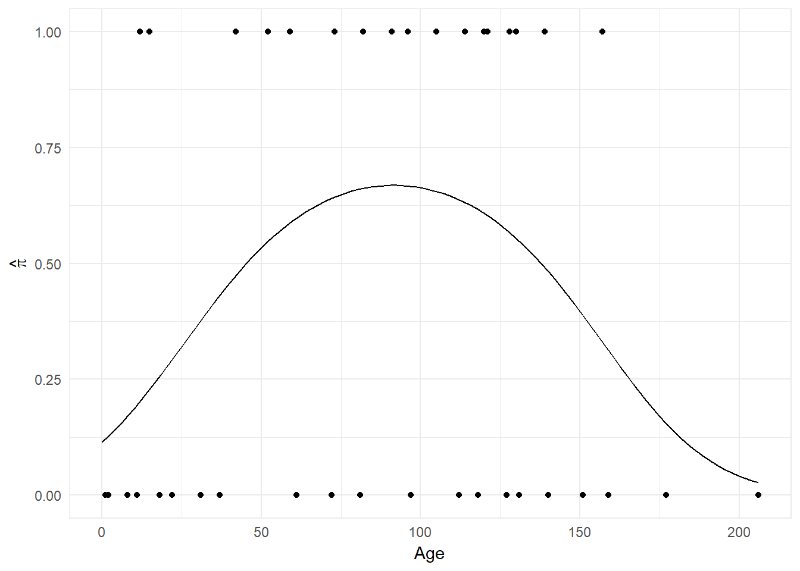

\[ \newcommand{\Prob}{\operatorname{P}} \newcommand{\E}{\operatorname{E}} \newcommand{\Var}{\operatorname{Var}} \newcommand{\Cov}{\operatorname{Cov}} \newcommand{\se}{\operatorname{se}} \newcommand{\re}{\operatorname{re}} \newcommand{\ybar}{{\overline{Y}}} \newcommand{\phat}{{\hat{p}}} \newcommand{\that}{{\hat{T}}} \newcommand{\med}{{\tilde{Y}}} \]
\[ \ln\left( \mu \right) = \alpha + \beta x \implies \begin{cases} \stackrel{x=1}{\implies} \ln\left( \mu_{B} \right) = \alpha + \beta \\ \stackrel{x=0}{\implies} \ln\left( \mu_{A} \right) = \alpha \end{cases} \implies \ln\left( \mu_{B} \right) - \beta = \ln\left( \mu_{A} \right) \implies \] \[ \beta = \ln\left( \mu_{B} \right) - \ln\left( \mu_{A} \right) = \ln\left( \frac{\mu_{B}}{\mu_{A}} \right) \implies e^{\beta} = \frac{\mu_{B}}{\mu_{A}} \]
poiss_reg_imperfection <-
waifer_imperfections %>%
glm(Imperfections ~ Treatment, data = ., family = poisson)
summary(poiss_reg_imperfection)##
## Call:
## glm(formula = Imperfections ~ Treatment, family = poisson, data = .)
##
## Deviance Residuals:
## Min 1Q Median 3Q Max
## -1.5280 -0.7622 -0.1699 0.6938 1.5399
##
## Coefficients:
## Estimate Std. Error z value Pr(>|z|)
## (Intercept) 1.6094 0.1414 11.380 < 2e-16 ***
## TreatmentB 0.5878 0.1764 3.332 0.000861 ***
## ---
## Signif. codes: 0 '***' 0.001 '**' 0.01 '*' 0.05 '.' 0.1 ' ' 1
##
## (Dispersion parameter for poisson family taken to be 1)
##
## Null deviance: 27.857 on 19 degrees of freedom
## Residual deviance: 16.268 on 18 degrees of freedom
## AIC: 94.349
##
## Number of Fisher Scoring iterations: 4\[ \ln\left( \mu \right) = 1.6094 + 0.5878x \implies \mu = 4.99981(1.800024)^{x} \] That is, on average for as you move from treatment A to B, \(\ln\left( \mu \right)\) increases by 0.5878, or the mean number of imperfections increases by a multiplicative factor of 1.800024, based on the sample.
From above, we have a Wald P-Value of \(0.000861 < \alpha = 0.05\), and therefore reject the null hypothesis of equal means, based on the sample, and accept that there is a difference in means between the two treatments.
poiss_reg_imperfection %>%
confint(parm = "TreatmentB", level = 0.95) %>%
exp## Waiting for profiling to be done...## 2.5 % 97.5 %
## 1.280063 2.560228That is, based on the sample, with 95% confidence, the true value of \(\frac{\mu_{B}}{\mu_{A}}\) lies somewhere between 1.28 and 2.56.
\[ \hat{\mu}_{1} = e^{-2.38+1.733(1)} = e^{-0.657} = 0.5236 \] \[ \hat{\mu}_{2} = e^{-2.38+1.733(0)} = e^{-2.38} = 0.0925 \]
95% CI for \(\mu_{1}/\mu_{2}\): \[ e^{\hat{\beta}\mp z_{0.975}\se\left(\hat{\beta}\right)} \]
exp(1.733+qnorm(0.975)*0.147*c(-1, 1))## [1] 4.241366 7.546733The negative binomial model appears to be more believable. This is because we’d expect \(\mu_i={\sigma_{i}}^{2}\), which may be true for whites, but definitely doe not hold for blacks.
If the Poisson model were appropriate, we’d expect to see \(\hat{D}\approx 0\), but instead we observe a value of 4.94. Since 0 is close to 5 standard deviations away from the estimate, it’d be extremely unlikely this value is merely an outlier.
train_collisions %<>%
mutate(
Collisions_Total = Collisions + Road_Collisions
,Rate = (Collisions + Road_Collisions)/Km
,Year_base = Year-min(Year)
)
poiss_reg_train <- suppressWarnings(
train_collisions %>%
glm(Rate ~ Year_base, data = ., family = poisson)
)
poiss_reg_train_int <- suppressWarnings(
train_collisions %>%
glm(Rate ~ 1, data = ., family = poisson)
)
summary(poiss_reg_train)##
## Call:
## glm(formula = Rate ~ Year_base, family = poisson, data = .)
##
## Deviance Residuals:
## Min 1Q Median 3Q Max
## -0.074577 -0.032644 -0.006729 0.029501 0.150694
##
## Coefficients:
## Estimate Std. Error z value Pr(>|z|)
## (Intercept) -3.79488 2.72653 -1.392 0.164
## Year_base -0.03949 0.19616 -0.201 0.840
##
## (Dispersion parameter for poisson family taken to be 1)
##
## Null deviance: 0.10630 on 28 degrees of freedom
## Residual deviance: 0.06445 on 27 degrees of freedom
## AIC: Inf
##
## Number of Fisher Scoring iterations: 7summary(poiss_reg_train_int)##
## Call:
## glm(formula = Rate ~ 1, family = poisson, data = .)
##
## Deviance Residuals:
## Min 1Q Median 3Q Max
## -0.09341 -0.05297 -0.01480 0.03256 0.15988
##
## Coefficients:
## Estimate Std. Error z value Pr(>|z|)
## (Intercept) -4.294 1.589 -2.702 0.00689 **
## ---
## Signif. codes: 0 '***' 0.001 '**' 0.01 '*' 0.05 '.' 0.1 ' ' 1
##
## (Dispersion parameter for poisson family taken to be 1)
##
## Null deviance: 0.1063 on 28 degrees of freedom
## Residual deviance: 0.1063 on 28 degrees of freedom
## AIC: Inf
##
## Number of Fisher Scoring iterations: 6anova(poiss_reg_train_int, poiss_reg_train, test = "Chisq")## Analysis of Deviance Table
##
## Model 1: Rate ~ 1
## Model 2: Rate ~ Year_base
## Resid. Df Resid. Dev Df Deviance Pr(>Chi)
## 1 28 0.10630
## 2 27 0.06445 1 0.041849 0.8379From our \(\chi^{2}\) test, our p-value is \(>\alpha=0.05\), so we fail to reject the null hypothesis, that the models explain the same amount of variance, based on the sample. As such, we conclude that the Year exhibits no effect, and our rates are constant.
\[ W = \frac{-0.0337-0}{0.0130} = -2.592308 \sim \mathcal{N}(0,1) \implies P-Value = 2\min\{\Prob(W \leq -2.592308), \Prob(W \geq -2.592308)\} = \] \[ 2\min\{0.004766719, 0.9952333\} = 0.009533438 \] Since this is \(<\alpha=0.05\), we reject our null hypothesis of \(\beta=0\), and assume the alternative to be true based on the sample.
95% CI for \(\beta\): \[ [-0.060,-0.008] \] 95% CI for \(e^{\beta}\): \[ e^{[-0.060,-0.008]} = [0.9417645,0.9920319] \] That is, with 95% confidence, the true average multiplicative increase for the collision rate as the year increases by 1, is between 0.9417645 and 0.9920319, based on the sample.
\[ \ln\left(\theta\right) = -3.7771 + 0.1449x \stackrel{x=8}{\implies} \ln\left(\theta\right) = -2.6179 \implies \hat{\pi} = \frac{e^{-2.6179}}{1+e^{-2.6179}} = 0.068 \]
\[ \ln\left(\theta\right) = -3.7771 + 0.1449x \stackrel{x=26}{\implies} \ln\left(\theta\right) = -0.0097 \implies \hat{\pi} = \frac{e^{-0.0097}}{1+e^{-0.0097}} = 0.4975 \approx 0.5 \]
prob <- function(x){exp(-3.7771 + 0.1449*x)/(1 + exp(-3.7771 + 0.1449*x))}
0.1449*prob(8)*(1-prob(8))## [1] 0.0091825880.1449*prob(26)*(1-prob(26))## [1] 0.03622415ggplot(data = tibble(x = c(0, 75)), aes(x)) +
stat_function(fun = prob) +
labs(y = expression(hat(pi)))
prob(28)## [1] 0.5695707prob(14)## [1] 0.1482365prob(28)-prob(14)## [1] 0.4213342\[ \frac{\theta(x)}{\theta(x-1)} = \frac{e^{-3.7771 + 0.1449(x)}}{e^{-3.7771 + 0.1449(x-1)}} = e^{0.1449} = 1.16 \]
For each new decade, the probability of a CG for a pitcher falls by 6.94% on average in the NL, based on the sample.
\[ \hat{\pi}(12) = 0.7578 - 0.0694(12) = -0.075 \] This is not plausible, as \(\pi\in[0,1]\), and -0.075 exists outside of it. As well, this year does not exists in the sample, so it is outside the scope of the regression.
\[ \hat{\pi}(12) = \frac{e^{1.148 - 0.315(12)}}{1 + e^{1.148 - 0.315(12)}} = 0.0671 \] This is more plausible, as it satisfies our restraint on \(\pi\). However, since 12 is not in the sample, this may not accurate.
logit_reg_space <- glm(TD ~ Temp, data = space_results, family = binomial)
summary(logit_reg_space)##
## Call:
## glm(formula = TD ~ Temp, family = binomial, data = space_results)
##
## Deviance Residuals:
## Min 1Q Median 3Q Max
## -1.0611 -0.7613 -0.3783 0.4524 2.2175
##
## Coefficients:
## Estimate Std. Error z value Pr(>|z|)
## (Intercept) 15.0429 7.3786 2.039 0.0415 *
## Temp -0.2322 0.1082 -2.145 0.0320 *
## ---
## Signif. codes: 0 '***' 0.001 '**' 0.01 '*' 0.05 '.' 0.1 ' ' 1
##
## (Dispersion parameter for binomial family taken to be 1)
##
## Null deviance: 28.267 on 22 degrees of freedom
## Residual deviance: 20.315 on 21 degrees of freedom
## AIC: 24.315
##
## Number of Fisher Scoring iterations: 5prob_fun <- function(x){
predict.glm(logit_reg_space, newdata = data.frame(Temp = x), type = "response")
}
space_results %>%
ggplot(
aes(
x = Temp
,y = TD
)
) +
geom_point() +
stat_smooth(
method = "glm"
,method.args = list(family = "binomial")
,se = FALSE
) +
labs(y = expression(hat(pi)))
As temperature increase, on average the probability of TD decreases, based on the sample.
prob_fun(31)## 1
## 0.9996088\[ 0.5 = \frac{e^{15.0429-0.2322x}}{1+e^{15.0429-0.2322x}} \implies \frac{1}{2} \left( 1+e^{15.0429-0.2322x} \right) = e^{15.0429-0.2322x} \implies \] \[ 1 = e^{15.0429-0.2322x} \implies 0 = 15.0429-0.2322x \implies x = 64.79464 \] More generally: \[ x_{0.5} = -\frac{\alpha}{\beta} \]
Temp_median <- -logit_reg_space$coefficients[[1]]/logit_reg_space$coefficients[[2]]
Temp_median## [1] 64.79464prob_fun(Temp_median)## 1
## 0.5That is, on average, for every unit increase in temperature in Fahrenheit the log odds in favour decrease by -0.2322, or the odds in favour decrease by a multiplicative factor of 0.7927875, based on the sample.
From above, our p-value for \(H_{0}:\beta=0 \text{ vs. } H_{1}:\beta\neq0\) is 0.0320, so at \(\alpha=0.05\), we reject the null hypothesis, and assume the alternative to be true based on the sample.
logit_reg_space_int <- glm(TD ~ 1, data = space_results, family = binomial)
summary(logit_reg_space_int)##
## Call:
## glm(formula = TD ~ 1, family = binomial, data = space_results)
##
## Deviance Residuals:
## Min 1Q Median 3Q Max
## -0.8519 -0.8519 -0.8519 1.5425 1.5425
##
## Coefficients:
## Estimate Std. Error z value Pr(>|z|)
## (Intercept) -0.8267 0.4532 -1.824 0.0681 .
## ---
## Signif. codes: 0 '***' 0.001 '**' 0.01 '*' 0.05 '.' 0.1 ' ' 1
##
## (Dispersion parameter for binomial family taken to be 1)
##
## Null deviance: 28.267 on 22 degrees of freedom
## Residual deviance: 28.267 on 22 degrees of freedom
## AIC: 30.267
##
## Number of Fisher Scoring iterations: 4anova(logit_reg_space_int, logit_reg_space, test = "Chisq")## Analysis of Deviance Table
##
## Model 1: TD ~ 1
## Model 2: TD ~ Temp
## Resid. Df Resid. Dev Df Deviance Pr(>Chi)
## 1 22 28.267
## 2 21 20.315 1 7.952 0.004804 **
## ---
## Signif. codes: 0 '***' 0.001 '**' 0.01 '*' 0.05 '.' 0.1 ' ' 1From above, our p-value for \(H_{0}:\beta=0 \text{ vs. } H_{1}:\beta\neq0\) is 0.004804, so at \(\alpha=0.05\), we reject the null hypothesis, and assume the alternative to be true based on the sample.
logit_reg_kyph <- glm(Result ~ Age, data = kyphosis, family = binomial)
summary(logit_reg_kyph)##
## Call:
## glm(formula = Result ~ Age, family = binomial, data = kyphosis)
##
## Deviance Residuals:
## Min 1Q Median 3Q Max
## -1.3126 -1.0907 -0.9482 1.2170 1.4052
##
## Coefficients:
## Estimate Std. Error z value Pr(>|z|)
## (Intercept) -0.572693 0.602395 -0.951 0.342
## Age 0.004296 0.005849 0.734 0.463
##
## (Dispersion parameter for binomial family taken to be 1)
##
## Null deviance: 55.051 on 39 degrees of freedom
## Residual deviance: 54.504 on 38 degrees of freedom
## AIC: 58.504
##
## Number of Fisher Scoring iterations: 4Since our p-value for age is \(0.463>\alpha=0.05\), we fail to reject the null hypothesis, based on the sample, and assume age has no effect on the result.
kyphosis %>%
ggplot(
aes(
x = Age
,y = Result
)
) +
geom_point() +
stat_smooth(
method = "glm"
,method.args = list(family = "binomial")
,se = FALSE
) +
labs(y = expression(hat(pi)))
As you can see, there seems to be no noticable difference in clustering at the tails for each response based on age. As such it’d ake sense we’d see such a low significance for the slope parameter. There is however some clustering near the middle for the Kyphosis results, so there may be an additional explanatory variable needed, or some polynomial term.
kyphosis %<>%
mutate(Age2 = Age^2)
logit_reg_kyph_poly <- glm(Result ~ Age + Age2, data = kyphosis, family = binomial)
summary(logit_reg_kyph_poly)##
## Call:
## glm(formula = Result ~ Age + Age2, family = binomial, data = kyphosis)
##
## Deviance Residuals:
## Min 1Q Median 3Q Max
## -1.482 -1.009 -0.507 1.012 1.788
##
## Coefficients:
## Estimate Std. Error z value Pr(>|z|)
## (Intercept) -2.0462547 0.9943478 -2.058 0.0396 *
## Age 0.0600398 0.0267808 2.242 0.0250 *
## Age2 -0.0003279 0.0001564 -2.097 0.0360 *
## ---
## Signif. codes: 0 '***' 0.001 '**' 0.01 '*' 0.05 '.' 0.1 ' ' 1
##
## (Dispersion parameter for binomial family taken to be 1)
##
## Null deviance: 55.051 on 39 degrees of freedom
## Residual deviance: 48.228 on 37 degrees of freedom
## AIC: 54.228
##
## Number of Fisher Scoring iterations: 4prob_kyph_poly_fun <- function(x){
predict(
object = logit_reg_kyph_poly
,newdata = tibble(Age = x, Age2 = x^2)
,type = "response"
)
}
kyphosis %>%
ggplot() +
geom_point(
aes(
x = Age
,y = Result
)
) +
stat_function(
data = tibble(x = c(0, 200))
,aes(x)
,fun = prob_kyph_poly_fun
) +
labs(y = expression(hat(pi)))
This function is maximized at \(\approx 91.552\), so at Age in months increases up until that point, the probability on average increases, based on the sample. Afterwards as Age increases above that point, on average the probability decreases, based on the sample.